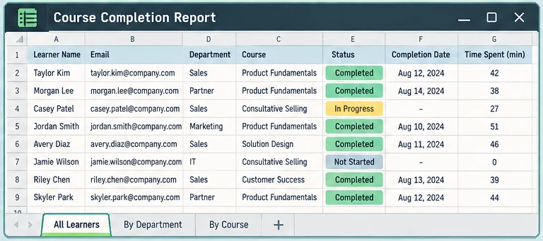

Repeatable inputs
Generate the same employee and partner activity and certificate reports in a consistent sequence.
I automated a recurring certification-reporting workflow that depended on four LMS exports. Selenium handled the repeated report generation and downloads; pandas and openpyxl normalized the data, compared learner records, and produced review-ready Complete and Incomplete worksheets.
Business Need
The recurring reporting package required the same four LMS reports and the same comparison work each time. I automated the repeatable steps while keeping failed downloads, missing matches, and unusual records visible for review.
Generate the same employee and partner activity and certificate reports in a consistent sequence.
Use a stable learner key to compare report evidence and make the completion logic easy to inspect.
Keep exceptions visible so automation supports operational judgment instead of silently replacing it.
Automation Workflow
Each stage automates a repeatable task, but it also has a validation point so bad inputs do not quietly become a bad final workbook.
Browser automation
Selenium opens the saved report views, generates each export, and downloads the Excel files in the expected sequence.
Repeated browser navigation, report generation, and download steps.
Confirm the expected report package exists before analysis begins.
Four Excel exports ready for data processing.
Exception Handling
Choose an exception to see what stays automated and where I deliberately preserve a review checkpoint.
The workflow checks for the expected exports instead of moving forward with a partial report package.
Confirm the missing report, rerun it if needed, and only continue when the input set is complete.
Workbook Output
These public-safe samples show the reporting and analytics surfaces I designed around the workflow, from row-level exports to higher-level completion views.

A spreadsheet-style reporting view showing the kind of completion evidence the workflow consolidates for review.
Design Outcome
Browser steps and spreadsheet comparison moved into a repeatable Python workflow.
Complete and Incomplete worksheets replaced manual comparison across four separate exports.
Missing, duplicate, unmatched, or unusual records remain available for human QA instead of being silently discarded.
Public-safe case study: course identifiers, report names, learner data, account details, and internal file structures are intentionally omitted.